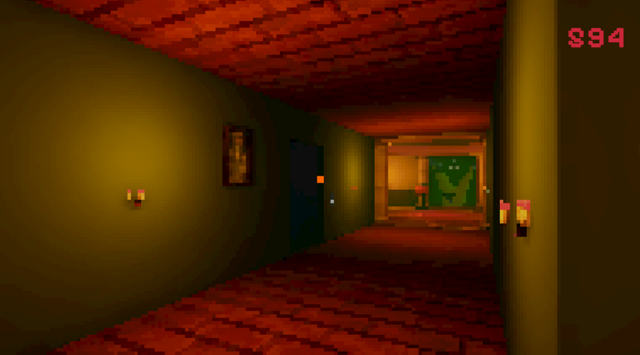
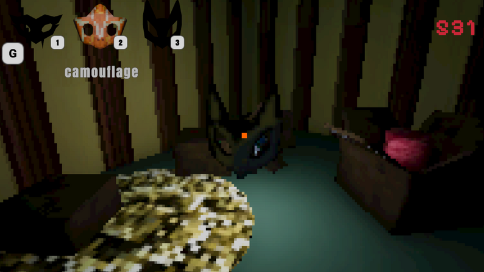
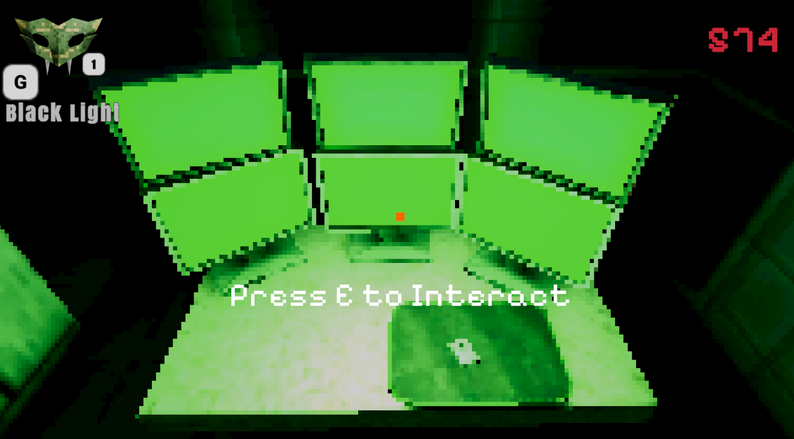

Masks Eye
-Puzzelgame waar je maskers gebruikt-

Tijdens dit project werkte ik samen in een team met zowel artists als developers aan een 3-daagse game jam, waarin we een puzzelspel ontwikkelden genaamd Mask's Eye. Het spel draait om het landgoed van Robert Sceleritas, waarin spelers maskers moeten verzamelen. Elk masker geeft unieke krachten die nodig zijn om puzzels op te lossen en uiteindelijk de ware moordenaar te ontmaskeren.
Mijn focus lag vooral op het ontwerpen en implementeren van de mini-games die nodig waren om de maskers te unlocken. Eén van de meest memorabele momenten was de laatste mini-game, waarin spelers een kameleon moesten matchen met kleuren. De eerste spelers waren echter kleurenblind, waardoor ze helemaal verdwaalden wat zorgde voor een hilarisch maar leerzaam inzicht in speltoegankelijkheid en ontwerpkeuzes.
Mijn focus lag vooral op het ontwerpen en implementeren van de mini-games die nodig waren om de maskers te unlocken. Eén van de meest memorabele momenten was de laatste mini-game, waarin spelers een kameleon moesten matchen met kleuren. De eerste spelers waren echter kleurenblind, waardoor ze helemaal verdwaalden wat zorgde voor een hilarisch maar leerzaam inzicht in speltoegankelijkheid en ontwerpkeuzes.
Details
Uitgekomen: Januari 2026
Engine: Unity
Taal: C#
Teamgrootte: 7
Rol: Gameplay Developer
Tijd: 3 dagen
Mijn bijdrage
Fossielen/Steen Display System
- Toont gevonden fossielen en stenen in de main scene.
- Zorgt dat ontdekkingen blijven als je teruggaat naar de main scene.
Mining & Interactie
- Systeem om stenen te breken met geluid, animatie en visuele feedback.
- Verwijdert stenen en activeert objecten zoals dirt en gems.
Scene-specifiek gedrag & input
- Objecten worden pas interactief als de omgeving dat toestaat.
- Touch input via raycast.
Game state management
- Update stone counts bij pickups.
- Houdt bij welke rocks gekozen zijn en beheert scene-transities.
private void Update()
{
_sceneName = SceneManager.GetActiveScene().name;
//als je in een van de graaf scenes zit
if ((_sceneName == "fossils" || _sceneName == "rocks" ) )
{
//vind de fossiel/steen die gespawned is
_gemObj = GameObject.Find("gem");
_gemScipt = _gemObj.GetComponent();
//als fossiel nog niet toegeveogd is
if (_fossilAdded == false && _gemObj.activeInHierarchy)
{
//haal de prefab van de steen of fossiel op
FossilPrefabs.Add(_gemScipt.SelectedPrefab);
_fossilAdded = true;
}
}
else
{
//als je uit de graafscene bent zet fossiltoegevoegd of false
//hierdoor kan je later weer een fossiel opgraven
//en laten tonen op het algemene graafscherm
_fossilAdded = false;
}
if(_sceneName == "SplashScreen")
{
//als je terug gaat naar menu
//haal alle stenen info weg
DugUpRocks.Clear();
NameOfRocks.Clear();
FossilPrefabs.Clear();
}
if(_sceneName == "level 1")
{
//vind de opgegraven stenen doormiddel van de naam
if(_rocksFound == false)
{
//zoek doormiddel van de namen de locaties van de gegraven stenen op
foreach (string name in NameOfRocks)
{
DugUpRocks.Add(GameObject.Find(name));
}
_rocksFound = true;
}
//afhankelijk van welke hopen al gegraven zijn
//spawn op elke hoop de juiste fossiel/steen prefab
//haal daarna de hopen weg
for(int i = 0; i < DugUpRocks.Count; i++)
{
Instantiate(FossilPrefabs[i], DugUpRocks[i].transform.position, DugUpRocks[i].transform.rotation);
Destroy(DugUpRocks[i]);
}
DugUpRocks.Clear();
}
else
{
//maak de lijst schoon zodat het geen probelemen veroorzaakt in lvl1
RockChosen = false;
DugUpRocks.Clear();
_rocksFound= false;
}
}


